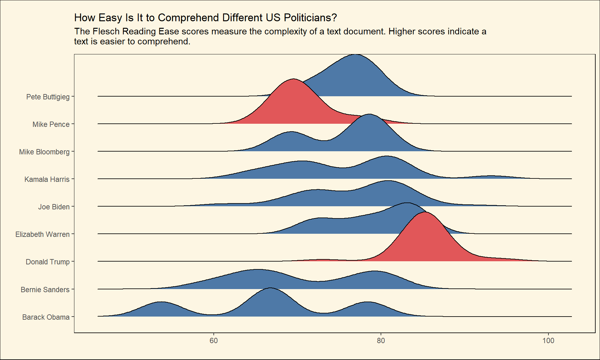
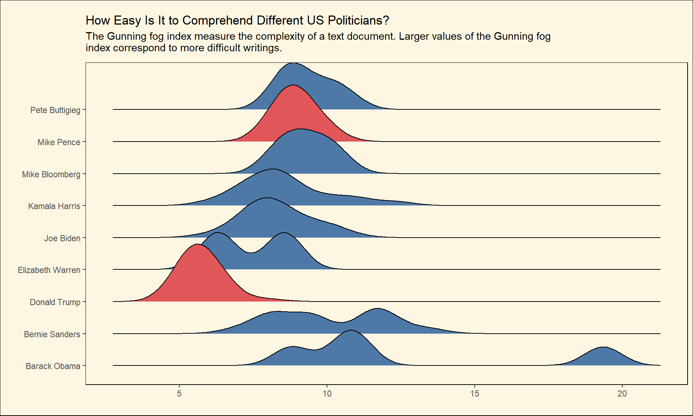
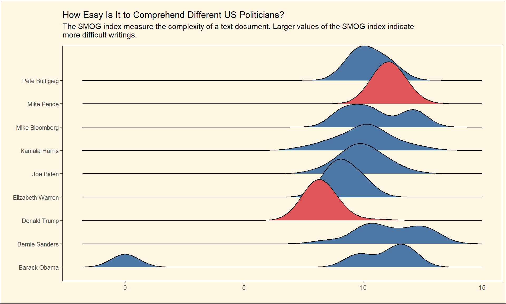
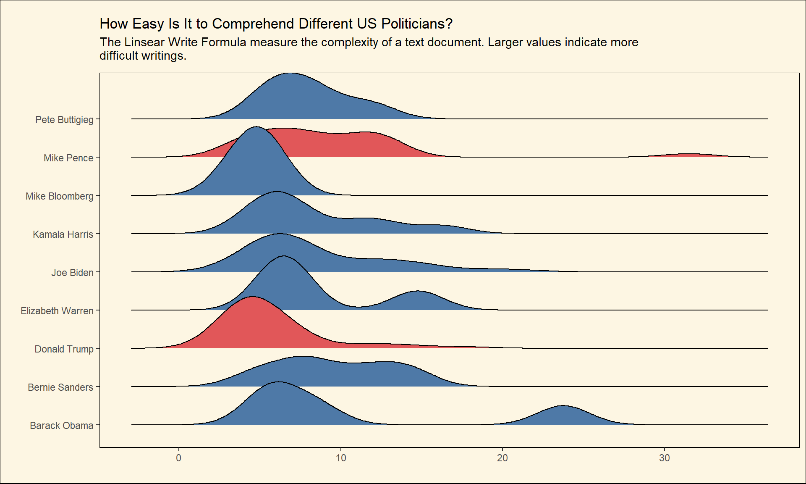
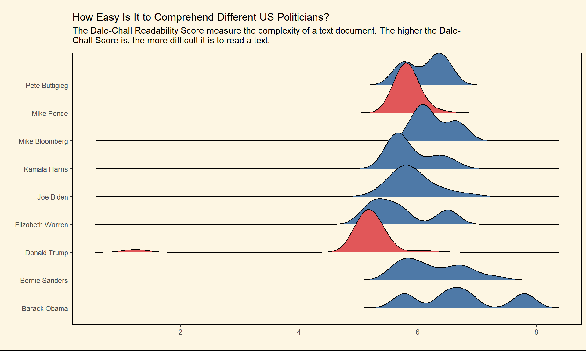
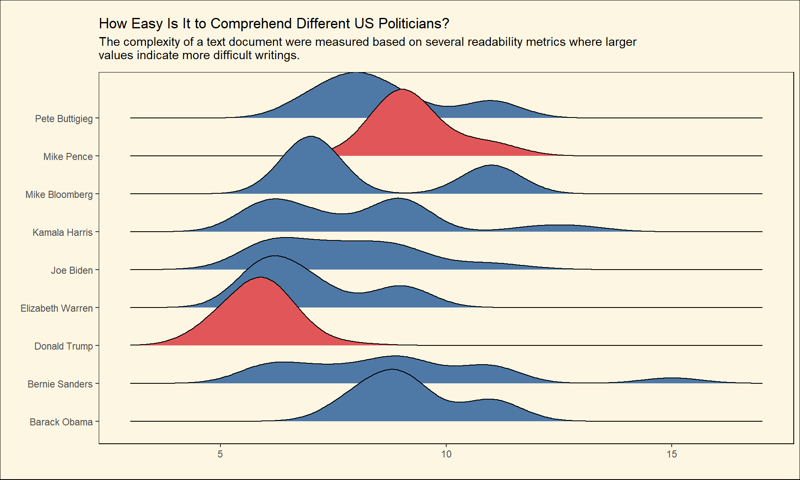

Aside from their political differences, Donald Trump and Barack Obama have very contrasting personalities, traits and characters. Obama is known to be a great communicator and an articulate speaker whose speeches are used in English classes to show how one should speak proper English. On the other hand, Trump is not the most eloquent English speaker or US president in history. Every now and then, you can find a clip on the web where Donald Trump is being mocked for the way he speaks or mispronounces words. This is so obvious that even non-native English speakers can notice how Trumps speeches are very simple and inarticulate. Of course, this was not a bad thing for Trump at all. Actually, almost every political analyst that you see on the news talks about the fact that a vast majority of Trumps fervent supporters are not college-educated Americans. We can attribute this to the fact that he knows how to speak to his audience and his base supporters using their language (Although it is more likely that he cannot speak better English better than this level).
This post will investigate how difficult it is to understand what each US politicians talked about in the 2020 US Election cycle. I will use several readability metrics that can help us compute text comprehensibility. A wide range of these measures are implemented in the {textstat} python package, and it is super easy to calculate them using this package.
I compiled a list of US Election-related speeches from rev.com and turned them into an R package called {us2020election}. I use this package as my data source for my analysis. Like some of my other posts, I use Python to perform the analysis and R to visualize my results. Now lets get started by importing the necessary packages.
Show code
library(tidyverse)
library(reticulate)
library(ggthemes)
library(us2020election)
library(ggridges)
theme_set(theme_tufte())
theme_update(legend.position = 'none',
text = element_text(family = 'Lobser'),
plot.title = element_text(margin = margin(t= 10,b= 5),family = 'Lobser'),
plot.subtitle = element_text(margin = margin(b= 10),family = 'Lobser'),
panel.background = element_rect(fill = '#FDF6E3'),
plot.background = element_rect(fill = '#FDF6E3'))Show code
import numpy as np
import pandas as pd
import textstatThere are several readability measures for English text included in {textstat}. Calculating these measures is very straightforward and easy. I will explain what each metric represents in more details.
Show code
us_election_speeches = r.us_election_speeches
us_election_speeches['Flesch_Reading_Ease_formula'] = us_election_speeches['text'].apply(lambda x: textstat.flesch_reading_ease(x))
us_election_speeches['gunning_fog'] = us_election_speeches['text'].apply(lambda x: textstat.gunning_fog(x))
us_election_speeches['smog_index'] = us_election_speeches['text'].apply(lambda x: textstat.smog_index(x))
us_election_speeches['automated_readability_index'] = us_election_speeches['text'].apply(lambda x: textstat.automated_readability_index(x))
us_election_speeches['coleman_liau_index'] = us_election_speeches['text'].apply(lambda x: textstat.coleman_liau_index(x))
us_election_speeches['linsear_write_formula'] = us_election_speeches['text'].apply(lambda x: textstat.linsear_write_formula(x))
us_election_speeches['dale_chall_readability_score'] = us_election_speeches['text'].apply(lambda x: textstat.dale_chall_readability_score(x))
us_election_speeches['text_standard'] = us_election_speeches['text'].apply(lambda x: textstat.text_standard(x))
us_election_speeches['text_standard_float'] = us_election_speeches['text'].apply(lambda x: textstat.text_standard(x,float_output = True))Lets look at the resulting dataframe.
Show code
us_election_speeches <- py$us_election_speeches
us_election_speeches %>%
glimpse()Rows: 286
Columns: 15
$ speaker <chr> "Barack Obama", "Mike Pence", "~
$ title <chr> "Barack Obama Campaign Roundtab~
$ text <chr> "Barack Obama: (00:01)\n or th~
$ date <chr> "Oct 21, 2020", "Oct 21, 2020",~
$ location <chr> "Philadelphia, Pennsylvania", "~
$ type <chr> "Roundtable", "Campaign Speech"~
$ Flesch_Reading_Ease_formula <dbl> 78.38, 67.99, 65.35, 85.99, 71.~
$ gunning_fog <dbl> 8.80, 9.32, 10.80, 5.37, 8.30, ~
$ smog_index <dbl> 9.8, 11.5, 11.6, 8.1, 10.4, 8.7~
$ automated_readability_index <dbl> 9.0, 10.8, 11.5, 5.3, 8.8, 6.9,~
$ coleman_liau_index <dbl> 7.95, 9.11, 8.71, 6.48, 8.12, 6~
$ linsear_write_formula <dbl> 5.375000, 5.333333, 11.666667, ~
$ dale_chall_readability_score <dbl> 5.77, 5.75, 6.27, 5.18, 5.65, 5~
$ text_standard <chr> "8th and 9th grade", "8th and 9~
$ text_standard_float <dbl> 9, 9, 12, 6, 8, 6, 6, 5, 11, 6,~Now I am going to visualize the changes in the distribution of speech complexity for each politician. To make things more, I will select a list of politicians that Id like to analyze in this post.
Show code
speakers <- c('Barack Obama','Pete Buttigieg','Mike Pence','Elizabeth Warren','Bernie Sanders','Donald Trump','Kamala Harris','Joe Biden','Mike Bloomberg')
custom_palette <-c(
'Mike Bloomberg' = '#4E79A7',
'Amy Klobuchar' = '#4E79A7',
'Joe Biden' = '#4E79A7',
'Pete Buttigieg' = '#4E79A7',
'Elizabeth Warren' = '#4E79A7',
'Barack Obama' = '#4E79A7',
'Bernie Sanders' = '#4E79A7',
'Kamala Harris' = '#4E79A7',
'Donald Trump' = '#E15759' ,
'Mike Pence' = '#E15759'
)Show code
create_plot <- function(metric = Flesch_Reading_Ease_formula,subtitle = subtitle) {
metrics <- rlang::enquo(metric)
us_election_speeches %>%
separate_rows(speaker, sep = ',') %>%
filter(speaker %in% speakers, type != 'Debate') %>%
add_count(speaker) %>%
ggplot() +
geom_density_ridges(aes(
x = !!metrics ,
y = speaker,
fill = speaker
)) +
labs(x = '', y = '',title = "How Easy Is It to Comprehend Different US Politicians?",subtitle = str_wrap(subtitle,width = 100)) +
scale_fill_manual(values = custom_palette)
}Now, lets look at several readability measure in more depth.
Flesch Reading Ease scores
The first readability score that I will look at is based on the Flesch Reading Ease formula. It computes the number of syllables to determine how easy a piece of text is. The maximum value of Flesch Reading Ease is 122, and there is no minimum value for it. Higher Flesch Reading Ease scores indicate that the text (speech) is easier to understand by the audience. In our case, it would show how sophisticated each politician is in terms of language use. You can find more about this metric on Wikipedia!
Show code
create_plot(Flesch_Reading_Ease_formula ,
subtitle = 'The Flesch Reading Ease scores measure the complexity of a text document. Higher scores indicate a text is easier to comprehend.')
we can interpret the scores using the following table:
| Score | School level | Notes |
|---|---|---|
| 100.0090.00 | 5th grade | Very easy to read. Easily understood by an average 11-year-old student. |
| 90.080.0 | 6th grade | Easy to read. Conversational English for consumers. |
| 80.070.0 | 7th grade | Fairly easy to read. |
| 70.060.0 | 8th & 9th grade | Plain English. Easily understood by 13- to 15-year-old students. |
| 60.050.0 | 10th to 12th grade | Fairly difficult to read. |
| 50.030.0 | College | Difficult to read. |
| 30.010.0 | College graduate | Very difficult to read. Best understood by university graduates. |
| 10.00.0 | Professional | Extremely difficult to read. Best understood by university graduates. |
Gunning fog index
The Gunning fog index is another metric to measure the complexity of a text document. It shows how many years of education one might need to understand a piece of text. Larger values of the Gunning fog index correspond to more difficult writings.
Show code
create_plot(gunning_fog,subtitle = 'The Gunning fog index measure the complexity of a text document. Larger values of the Gunning fog index correspond to more difficult writings.' )
The SMOG index
The SMOG index computes the ratio of polysyllables (words with three or more syllables) in sentences to determine text complexity.
Show code
create_plot(smog_index,subtitle = 'The SMOG index measure the complexity of a text document. Larger values of the SMOG index indicate more difficult writings.' )
Linsear Write Formula
Like previous the metric, the Linsear Write Formula uses words with three or more syllables to compute text readability. It also relies on the sentence length to measure how difficult reading a text could be.
Show code
create_plot(linsear_write_formula, subtitle = 'The Linsear Write Formula measure the complexity of a text document. Larger values indicate more difficult writings.')
Dale-Chall Readability Score
This metric is different from the other metrics that we have talked about. It uses a dictionary of 3000 words that are easy to read and understand for a fourth-grade student. So, Words that are not in this dictionary are considered to be complex. The higher the Dale-Chall Score is, the more difficult it is to read a text.
Show code
create_plot(dale_chall_readability_score,subtitle = 'The Dale-Chall Readability Score measure the complexity of a text document. The higher the Dale-Chall Score is, the more difficult it is to read a text.')
A unified readability
We introduced several readability metrics, but each one of them might give us a slightly different result. There is a way in textstats to combine all these metrics and have a single readability metric.
Show code
us_election_speeches %>%
filter(speaker %in% speakers) %>%
mutate(text_standard = str_replace(text_standard,' and ','-'),
text_standard = factor(
text_standard,
levels = c(
'4th-5th grade',
'5th-6th grade',
'6th-7th grade',
'7th-8th grade',
'8th-9th grade',
'9th-10th grade',
'10th-11th grade',
'11th-12th grade',
'12th-13th grade',
'14th-15th grade'
)
)) %>%
count(speaker, text_standard) %>%
mutate(n = n + 1) %>%
ggplot() +
geom_col(aes(x = text_standard , y = n, fill = speaker)) +
labs(x = '', y = 'Number of Speeches', title = "How Easy Is It to Understand 'Trump's Speeches?",
subtitle = 'Based on several readability tests, the education level that one needs to comprehend the 2020 Election speeches by different US politicians is illustrated in this plot.' ) +
scale_fill_manual(values = custom_palette) +
scale_y_log10() +
facet_wrap(~ speaker, ncol = 1) +
theme(axis.text = element_text(size = 13),
axis.title.y = element_text(size = 15,margin = margin(r = 10,l = 10)),
plot.title = element_text(size = 20,margin = margin(b = 10,t = 10)),
plot.subtitle = element_text(size = 14,margin = margin(b = 10)),
strip.text = element_text(size = 15))
Interestingly, we can observe that Trump never gave a speech to an audience with difficulty more than the 7th or 8th grade. We can also convert this readability metric to numbers to visualize and compare it to other metrics.
Show code
create_plot(text_standard_float,
subtitle = 'The complexity of a text document were measured based on several readability metrics where larger values indicate more difficult writings.')
Conclusion
We can consistently see that Trump speeches are less sophisticated and less complex than the speeches given by the rest of politicians. We can attribute this to his lack of sophistication in terms of language, the fact that he knows how can speak to his audience or both. Also, we can notice that Mike Pence and Barack Obama seem to use a more an advanced language in their speeches.